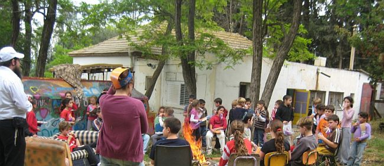

מאת : זלמן צרפתי פגישה בהשגחה פרטית דרך ארוכה ומרתקת עברו תהלוכות ואירועי ל”ג בע
דרך ארוכה ומרתקת עברו תהלוכות ואירועי ל”ג בעומר מאז הכריז עליהם הרבי בשנת תש”מ ועד היום. אנשים רבים זרמו ברחובות מאז אותה תקופה בה צעדות המוניות ברחובות היו דבר שבשגרה, ועד דור המסכים שיושב על הספה ומניף שלטים וירטואלים בכיכרות הרשת החברתית.
מאת: זלמן צרפתי

פגישה בהשגחה פרטית
דרך ארוכה ומרתקת עברו תהלוכות ואירועי ל”ג בעומר מאז הכריז עליהם הרבי בשנת תש”מ ועד היום. אנשים רבים זרמו ברחובות מאז אותה תקופה בה צעדות המוניות ברחובות היו דבר שבשגרה, ועד דור המסכים שיושב על הספה ומניף שלטים וירטואלים בכיכרות הרשת החברתית.
ועדיין בתהלוכה של הרבי, השיירה נמשכת, מתחדשת ומשתדרגת, ממציאה את עצמה מחדש ומתאימה את עצמה לרוח הזמן ולמציאות המשתנה. משתדלים לשמר את ההוראות של הרבי, את הרוח האוטנטית של התהלוכות ולחבר אותם לאירועי ל”ג בעומר עדכניים בהשתתפות כוכבי ילדים שמצליחים להוציא מאות אלפי ילדים ברחבי הארץ למפגן היהדות והגאון יעקב הגדול בעולם.
את הרב יצחק ציטרון פגשתי בהשגחה פרטית בכפר חב”ד בדיוק כשחשבתי לכתוב כתבה על הדרך שעברה התהלוכה בכמעט ארבעים השנים האחרונות. חשבתי לראיין שלוחים וותיקים שעומדים מאחורי התהלוכות עשרות שנים שיספרו מהזווית שלהם, על הדרך שעשו התהלוכות.
ואז פגשתי את הרב ציטרון מנהל בית חב”ד מטה יהודה. בית חב”ד מטה יהודה הוא בית חב”ד שחולש על השטח הגיאוגרפי הגדול בארץ ישראל. מאיזור קרית גת ועד לטרון. תחת שיפוטו שישים ישובים, מושבים וקיבוצים בעלי מגוון אוכלוסיות, סגנונות ומעמדות. לא מזמן הוא הזמין אותי לעשות איתו סיבוב של כמה שעות, זה היה מדהים.
למרות שהוא כבר סב לנכדים, יש לו מרץ של נער בן שש עשרה. הרכב שלו גומא תשעת אלפים קילומטרים בחודש. “ברוך ה’ הרבי עזר והצלחתי למצוא רכב גדול הכי חסכוני שיש” הוא אומר. ככה זה כשהדלק הוא סעיף משמעותי בתקציב השנתי של בית חב”ד. הוא כל היום נוסע בין עשרות המושבים, הישובים והקיבוצים. מסיע מתנדבים ומתנדבות לפעילות עם ילדים, מחזיר רב שמסר שיעור, מבקר אצל משפחה וחוזר לשיעור קצר במושב אחר. הוא מכיר מאות משפחות באופן אישי, ואת כל ראשי הועדים במושבים, רכזי התרבות, את כל הענ”קים (עובד נוער וקהילה), מנהלי המוסדות שבאזור.
פעילות בכפולות של שישים
כל פעילות אצלו מוכפלת בעשרות. כששליח במקום מתכנן מסיבת חנוכה, מחפש מקום לשיעור, או מארגן תהלוכת ל”ג בעומר, אצל הרב ציטרון זה מוכפל בשלושים, חמישים או שישים. אמרתי לו שאני עושה כתבה על תהלוכות וביקשתי ממנו כמה סיפורים כדי לצבוע את הכתבה. אחרי שעה של שיחה, כשנאלצתי לעצור את שטף הסיפורים כמעט בכח, הבנתי שהוא יהיה המרואיין היחיד שלי וגם אז, נצטרך להוציא מהדורה מיוחדת כדי לפרסם את כולם.
יותר מחמישים אלף איש מתגוררים במועצה האזורית מטה יהודה, לפחות עשרים אחוזים מהם משתתפים השבוע בעשרות תהלוכות וכינוסי ל”ג בעומר. “כשמדובר בכמות כזו של תהלוכות, לא שייך לרכז את כולם לעשרים וארבע שעות של ל”ג בעומר ואנחנו פורסים את ‘אירועי ל”ג בעומר’ על פני כל השבוע. את התהלוכות הגדולות והמשמעותיות בישובים אנחנו משתדלים לקיים ביום עצמו ואת כל השאר בימים שלפני ואחרי.
מטה יהודה נחשבת לאחת המועצות האזוריות הגדולות ביותר בארץ ישראל והיחידה במחוז ירושלים. היא משתרעת על שטח ענק של יותר מחצי מיליון דונם והיא עוטפת את ירושלים הגדולה. היא גם המועצה האזורית בעלת המספר הגדול ביותר של יישובים בארץ ישראל. נכון להיום קיימים בשטח שיפוטה 57 מושבים, כפרים, קיבוצים ויישובים קהילתיים.
הפריסה הגאוגרפית שלה מדהימה. היישוב הדרומי ביותר בשטח שיפוטה הוא היישוב נחושה שבחבל לכיש. היישוב הצפוני ביותר הוא נטף. במזרח והיא שולחת לשון אל תוך העיר ירושלים בקיבוץ רמת רחל, הנמצא במזרח העיר.
היישוב המאוכלס ביותר הוא היישוב הקהילתי צור הדסה הסמוך לביתר ובו מתגוררים קרוב ל–7,000 נפש, והיישוב הקטן ביותר הוא גיזו, בו מתגוררים בסך הכול כמאתיים תושבים
התהלוכות המיוחדות
השנה ימלאו עשרים שנה לשליחותו של הרב ציטרון. והוא מתכנן ביישובי המועצה יותר משישים תהלוכות. “את רובם אנחנו משתדלים לעשות ביום של ל”ג בעומר עצמו, אבל גם בימים שלאחר מכן יערכו עוד תהלוכות וכינוסים. “את פעילות ל”ג בעומר עם ‘המיוחדים’ אנחנו עושים אחרי ל”ג בעומר”, אומר הרב ציטרון.
‘המיוחדים’ הם למעשה דייריהם של שבעה מוסדות לאנשים בעלי מוגבלויות שונות. “אלה הם האירועים הכי מרגשים. הם נמשכים שעות רבות. אנחנו רוקדים ושמחים איתם וכמעט בכל פעם ובכל מקום אנחנו גם מזילים דמעה של התרגשות. אחרי האירוע אנחנו מניחים עמם תפילין. הם מחכים לנו בכל שנה בקוצר רוח”.
התהלוכות מתחילות בדרך כלל בימים שלפני ל”ג בעומר בפעילות מיוחדת שהם מעבירים בעשרות בתי ספר, מתנסים, ומועדוני תרבות בישובים שברחבי המועצה האזורית. בשנים האחרונות אנחנו מפעילים שורה של מועדוני צבאות ה’ שמופעלים על ידי צוות של מדריכות שמגיעות באופן קבוע. סביב המועדונים נוצר גרעין של ילדים, ולפני חגים כמו בל”ג בעומר, המועדון מארגן פעילות רחבה יותר בהשתתפות כלל ילדי הישוב.
ביום ל”ג בעומר עצמו אנחנו מקיימים עשרות תהלוכות. חלקם בליל ל”ג בעומר, חלקם בבוקר וחלקם אחר הצהרים. מטבע הדברים תהלוכות רבות נערכות במקביל ואני לא יכול להשתתף בכולן. במקרה כזה, התהלוכות מאורגנות על ידי צוותים של מתנדבים. בנות תיכון, אנ”ש בערים הסמוכות, וגם בחורי ישיבה.
בתשעה מתוך חמישים ושבעת הישובים פועלים כבר שלוחים קבועים שמתגוררים במקום, ובחלקם האחר פועלים אברכים או מגידי שיעורים במתכונת קבועה שכבר הספיקו ליצור קשרים והיכריות בישוב והם מארגנים את התהלוכה בישוב שלהם כשבית חב”ד המרכזי נותן להם גב ואת כל הסיוע הנדרש.
“בישוב נוה מיכאל הייתה אישה שמסרה שם שיעור במשך שמונה שנים. היא הייתה מארגנת תהלוכה כל שנה בהשקעה גדולה מאוד. מתנפחים, אמנים, לונה פארק וטנק מבצעים. כל נשות היישוב היו מתגייסות להכנות בתהלוכה והיו מגיעים אליה מאות ילדים מכל הישובים הסמוכים”. מספר הרב ציטרון.
ישובים רבים ברחבי המטה מתאפיינים בפערים רחבים במבנה החברתי–כלכלי של החברה וזאת בעקבות תופעת ההרחבות שפקדה כמעט את כל המגזר היישובי בארץ ישראל. מדובר בקרקע חקלאית שהופשרה לטובת בניית שכונות חדשות בהמשך וכהרחבה של הישובים הקיימים. אולם בעוד בישובים רבים האוכלוסיה הוותיקה ודור המייסדים של היישוב, הם מסורתיים ומשתייכים רובם לעדה מסויימת, הרי שבהרחבות מתגוררים משפחות אמידות מאוד בטירות ענק מה שיוצר באופן טבעי פערים גדולים בין תושבי המושב.
במצב הזה, קורה לעיתים שתהלוכת ל”ג בעומר הופכת להיות ‘השדכנית’ בין תושבי ההרחבה לתושבים הוותיקים. באחד המושבים נוצרו בעקבות התהלוכה היכרויות בין הגרעין החדש לוותיק, החדשים הוזמנו והגיעו לבית הכנסת בשבתות וחגים ואף יזמו כמה פעולות גיבוש ואחדות בין התושבים, וזאת בעקבות התהלוכה שהפכה לראש גשר בין התושבים.
התהלוכות האחרונות ברשימה הם כאמור התהלוכות ה’מיוחדות’ והן מרגשות אותו יותר מכל. מדובר על מעונות בהם חוסים אנשים בעלי מוגבלויות שכליות. יש שם אנשים במגוון רמות תפקוד. “רבים מהם איש לא בא לבקרם או מתעניין בגורלם”. מספר הרב ציטרון “אנחנו פועלים איתם כל השנה, באים לבקר אותם בימי הולדת, בחגים ומשמחים אותם. כל פעילות איתם היא מרגשת מחדש. אנחנו מביאים איתנו את כל מה שנשאר מהתהלוכות. ממתקים, פרסים, שלוקים, ספרונים ופרוספקטים ומחלקים להם. כל דבר כזה הוא יקר ערך אצלם. יש כאלו שקוראים לאט לאט וזה הופך להיות חומר הקריאה שלהם לזמן רב. אנחנו שמים להם ניגוני חב”ד והם שמחים ורוקדים בהתלהבות עצומה. יש בהם תמימות מיוחדת ומרגשת”.
דרושים שלוחים
בניגוד לבית חב”ד רגיל, פעילותו של בית חב”ד מטה יהודה מבוסס ברובו על מספר גדול מאוד של מתנדבים ופעילים במשך כל השנה. רבים מהם מקהילת חב”ד בביתר עילית הסמוכה.
בביתר גרים כיום כמה מאות משפחות חב”דיות. הרב ציטרון מבקר בכל בית כנסת חב”די בעיר במהלך הימים שקודמים לל”ג בעומר לגייס את אנ”ש לפעילות. הוא מספר על היענות גדולה בעיקר בשנים האחרונות, “יש יישובים שאנחנו שולחים אליהם לשבתות משפחה חב”דית, ומשפחות רבות מאנ”ש בעיר משתפות פעולה עם היוזמה החשובה הזאת”.
הוא מנצל את הבמה כדי לפנות למשפחות בכל הארץ ואומר כי הוא מחפש משפחות שמוכנות לבוא ו”לעשות שבת” באחד היישובים במועצה. “פעם הייתי גם מבשל לכל הזוגות את סעודות השבת. היום יש לנו סידור של אוכל מוכן. הזוג לא צריך לדאוג לכלום. הם מקבלים אירוח ברמה של צימר ואוכל כיד המלך. הם צריכים פשוט לבוא ולפעול בשבת בקרב התושבים. ברוב המקומות יש מניין ובחלק מהמקומות צריך קצת להתאמץ כדי ליצור אותו”. בקיצור, גם גשמיות וגם רוחניות בשליחות שבתית אחת.
הנשק הסודי
השיחה עם הרב ציטרון יכולה להימשך שעות וסיפור רודף סיפור. למרות העייפות אחרי יומיים רצופים של עבודה מאומצת, הוא נשמע ערני ורענן. למותר לציין כי ל”ג בעומר מתחיל בעבורו זמן רב לפני יום ההילולא של רשב”י… “בכל שנה אנחנו מדפיסים מודעות לכל היישובים ואני נוסע להדביק בכל יישוב ועובר מיישוב ליישוב. זה מתיש ואני מגיע הביתה באפיסת כוחות. מובן שכל התיאומים מול היישובים, הרשויות והוועדים השונים, גוזלים זמן רב”. הרי יש לדאוג לעשרות ולמאות של פרטים ופרטי פרטים קטנים בשל הפיזור העצום של הפעילות.
“השנה כל ילד יקבל חומש ותניא שהודפס ביישוב שלו, אם הודפס. אם לא, תניא שהודפס ביישוב סמוך. כדי להמחיש עד כמה ילדים מסוימים רחוקים מיהדות, אספר שבחלק מהמקומות מצאנו את עצמנו המומים מכך שילדים לא ידעו להגיד ‘שמע ישראל’… כך שההשקעה בשי הזה שכל ילד יקבל, שווה כל מאמץ”.
באמתחתו סיפורים לרוב: “פעם פגשנו באחד מהמרכזים לבריאות הנפש בחור מבית חב”די. כשהוא ראה אותנו הוא שמח ושאל אם הבאנו לו ס”ו וע”ב, שאלתי אותו האם הוא למד פעם את המאמרים האלו, משום שהם קשים ומורכבים. הוא ענה שהוא יודע אותם בעל פה והתחיל לחזור עשרים דקות רצופות מתחילת המשך תער”ב בעל פה.
הוא שמח מאוד לקראתנו, ויצא מכליו בריקוד. הוא רקד לבדו במשך כמה שעות וזאת לאחר שלדברי הצוות היה סגור ומכונס בעצמו במשך תקופה ארוכה. לצערנו, בפעם הבא הגענו נאמר לנו שהוא נפטר זמן קצר לאחר מכן ונפשו נגאלה מיסוריה.
פעילות בכפרים ערביים
מסתבר שלרב ציטרון יש גם פעילות בישובים ערביים. היישוב הערבי אבו גוש, הוא אבן שואבת ליהודים רבים. באבו גוש, בעין נקובא ובעין ראפע, מתגוררים יהודים לא מעטים. גם אליהם מגיע הרב ציטרון. “הגעתי למשפחה יהודית שמתגוררת בעין נקובא, הדפסנו שם תניא. במהלך ההדפסה הגיעו כמעט כל היהודים שמתגוררים ביישוב. אין לי הסבר איך זה קרה”.
אחד הנשקים הסודיים שלו זה הדפסת התניא. לדבריו, כל הדפסת תניא פועלת באופן מידי ונסי את פעולתה. ביישוב נווה שלום, יישוב מעורב במערב מטה יהודה, הוכשרו כמה מטבחים לאחר שהרב ציטרון הדפיס שם תניא. “חיפשתי בית יהודי. זאת אומרת בית שבו שני בני הזוג יהודים. אבל אחרי שהדפסנו שם תניא פנו כמה משפחות וביקשו שנכשיר להן את המטבח”.
אופי היישובים השונה מאוד ברחבי המועצה מחייב את הרב ציטרון להתאים את הפעילות למקום. וכל תהלוכה נושאת אופי אחר. הוא מונה את הסוגים השונים: “יש תהלוכות בישובים הדתיים. שם יש שיתוף פעולה נהדר עם כל האחרים. יש ישובים שקיימים בהם הרחבות וישוב מעורב דתי ומסורתי, יש ישובים שמגרשים אותנו משם ממש בכח. ויש את הקיבוצים שהם סיפור בפני עצמו.
שנים עשר הפסוקים והרב התימני
לסיום מספר לנו הרב ציטרון על תהלוכה בישוב גדול שם מכהן כרב המושב רב קשיש מאוד מיוצאי תימן. אותו רב מוכר ומכובד מאוד באזור. באחת השנים הרב ביקש להגיע אישית לתהלוכה. כמובן שנתנו לו את האפשרות בשמחה. הוא הגיע מלווה בכמה מנכדיו וניניו שתמכו בו ועזרו לו ללכת.
כשהגיע הוא שאל האם אמרו כבר את הפסוקים? אמרנו לו שעוד לא והוא ביקש לומר אותם. הרב הקדים ואמר ששנים עשר הפסוקים הללו הם קדושים מאוד ואמירתם היא סגולה גדולה ופועלת ישועות. הוא ביקש שיביאו אליו שמות של יהודים הזקוקים לברכה מיוחדת, והוא הקריא אחד לאחד את כל השמות שזרמו. לאחר מכן הוא החל לקרוא את שנים עשר הפסוקים בכוונה גדולה כשכל המשתתפים עונים אחריו.